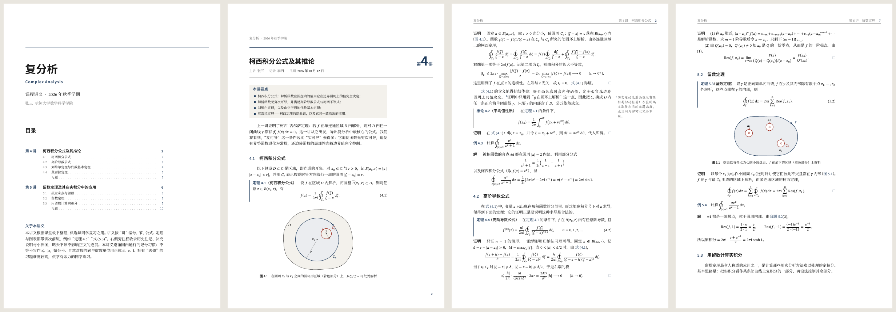
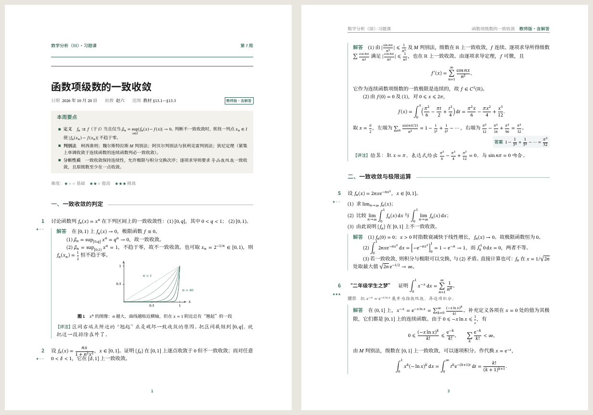
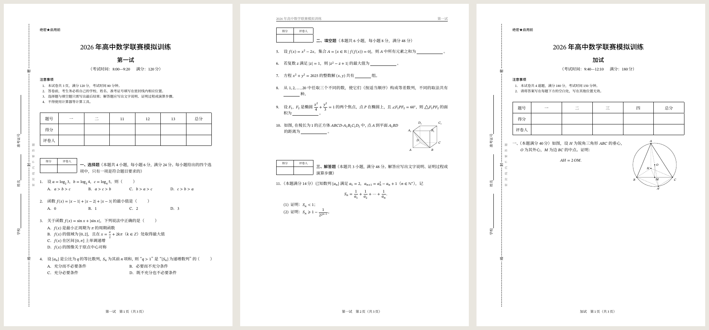
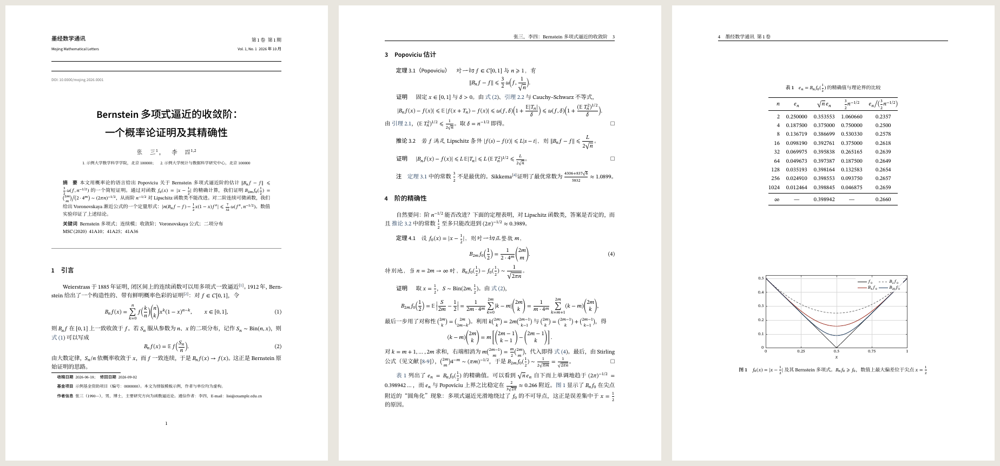
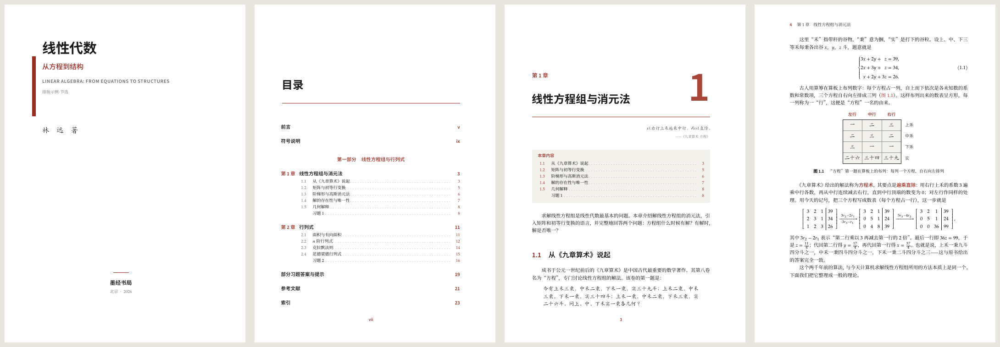
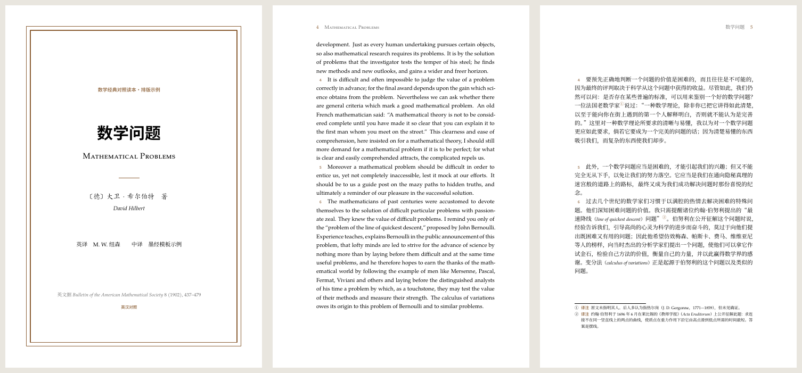

01 / MOJING-NOTES
数学讲义
课程讲义、读书笔记、讨论班记录
示例：复分析：柯西积分公式与留数定理
10 页 · 主模板 PDF
独立模板 · 完整示例源码
MOJING · MATHEMATICAL WRITING
六套独立的 LaTeX 模板，共享字体、数学记号与定理环境。先看示例 PDF，再下载完整模板，按自己的内容修改。
6 套模板 · 10 份 PDF 示例 · 6 个独立 ZIP

01 / MOJING-NOTES
课程讲义、读书笔记、讨论班记录
示例：复分析：柯西积分公式与留数定理
10 页 · 主模板 PDF

02 / MOJING-EXERCISE
习题课、作业、题解与学生练习
示例：数学分析：函数项级数的一致收敛
5 页 · 主模板 PDF


04 / MOJING-PAPER
论文、预印本与研究报告
示例：Bernstein 多项式逼近的收敛阶
7 页 · 主模板 PDF


06 / MOJING-TRANSLATION
译著、双语读本与术语整理
示例：希尔伯特《数学问题》英汉对照节选
16 页 · 主模板 PDF
下载对应 ZIP 并解压。每个包包含 main.tex、所需 .cls / .sty 和 README.txt。
在 main.tex 中替换标题、作者、正文与公式；书籍模板的章节放在 chapters/。
本地使用 TeX Live 2023 或更新版本，执行 latexmk main.tex。也可上传到 Overleaf，选择 XeLaTeX 编译器。
网页展示预先生成的 PDF 与模板下载。完整编译环境需要中文排版宏包 ctex、字体、latexmk，以及论文/书籍示例用到的 biber 与索引工具。模板自动选择可用中文字体；详细命令见源码 README。